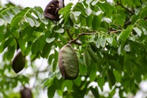

|  | lattostachys xylocarpa, known as the white tamarind or short-leaf beetroot is a common rainforest tree of eastern Australia. Found in the drier rainforests, which are based on volcanic soils. From as far south as the Orara River in northern New South Wales to Bowen in tropical Queensland. The name Elattostachys refers to "little spikes", a flower feature of other plants in this genus. xylocarpa refers to the hard woody fruit. A small to medium-sized tree up to 25 metres tall, with a stem diameter of 35 cm. The trunk may be fluted at the base. Dark brown bark is relatively smooth, with horizontal raised lines. Leaves pinnate and alternate on the stem. Leaflet stalks 3 mm long. Leaflets toothed, 3 to 8 cm long, 1.5 to 4 cm wide . Small hairy tufts may be found where the lateral leaf veins meet the mid rib leaf vein. E. xylocarpa habit Red flowers form on panicles between December and April. The fruit is a round or pear shaped capsule, yellowish on the outside. Usually splitting into three valved sections, with one black glossy seed. Often the sections are without seed. White to dark red aril is inside the fruiting capsule. Fruit ripens from March to June. |